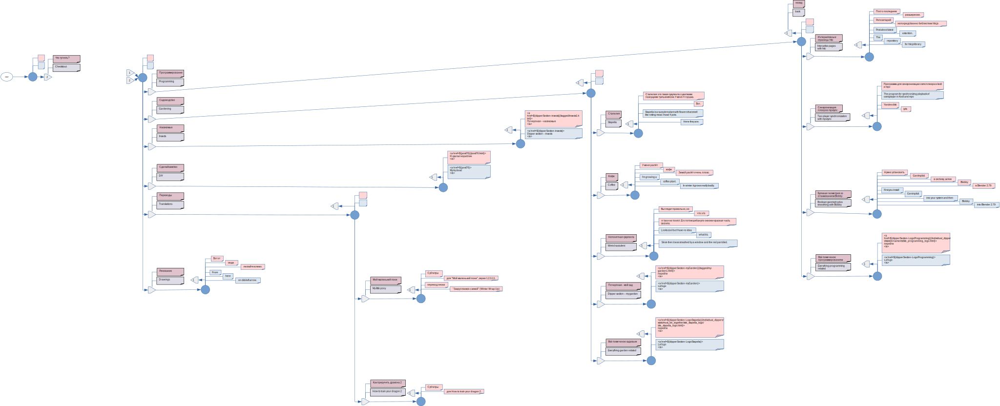

Противопопугайный сайт
Never Parrot
Вы, вероятно, заметили новое меню "Что тут есть? Checkitout:". Ниже показано как оно сделано при помощи hticExt.
You have probably noticed the new menu "Что тут есть? Checkitout:". Below the break I show how hticExt was used to make it.

ipfs
yandex disk
↑